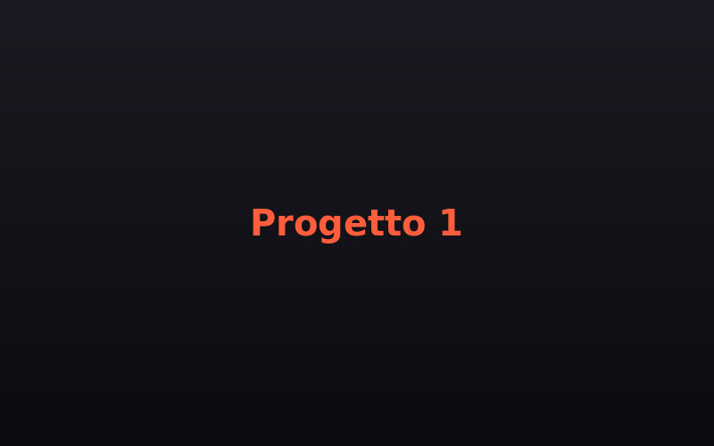
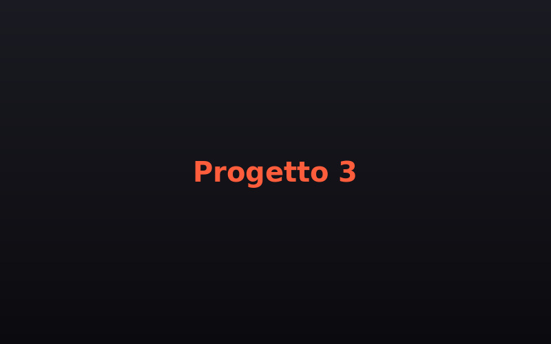
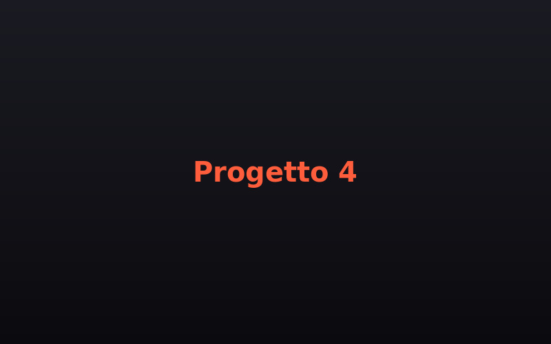
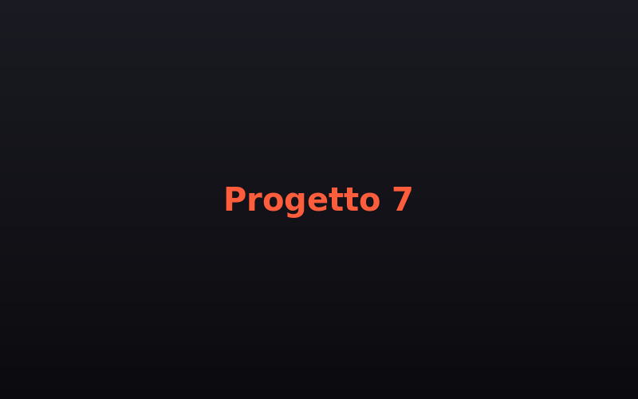
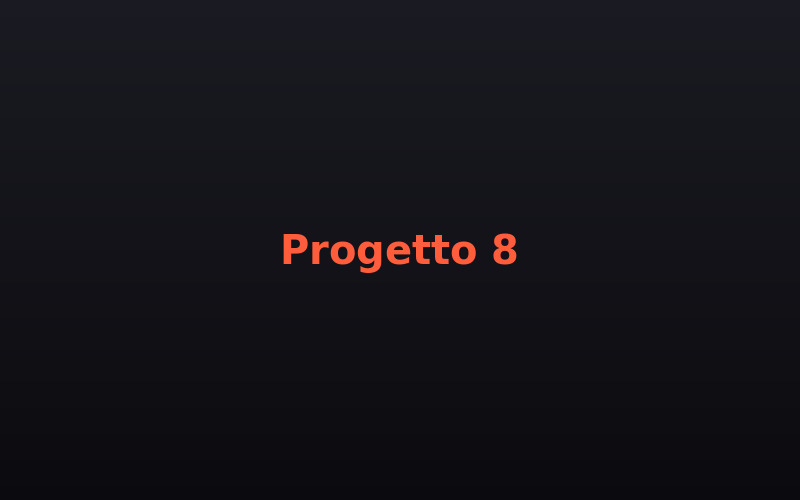

ITRAD — Applicazioni web industriali
Sviluppo e manutenzione di applicazioni web in ambiente aerospace & defense: interfacce responsive, flussi HTTP/REST, workflow Git strutturato.

Sviluppo e manutenzione di applicazioni web in ambiente aerospace & defense: interfacce responsive, flussi HTTP/REST, workflow Git strutturato.
Rebranding completo: logo, sistema tipografico, palette colori, tone of voice e brand guidelines.

Rebranding, sito WordPress e podcast per un brand locale.

Content strategy e supporto e-commerce.
Community management per progetti di marketing territoriale.
Progetto esposto in mostra nella sede di IED Firenze e pubblicato sulla rivista artistica FrizziFrizzi.

Due volte nella Short List Nazionale, Sezione TV — concorso tra scuole d'Italia.

2° posto nella realizzazione di un video promozionale per la mascotte viola.